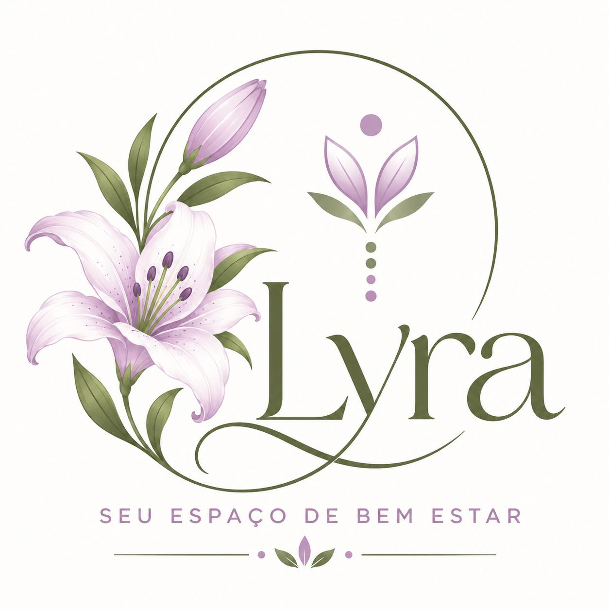

Auriculoterapia
Oferece alívio para dores, redução da ansiedade e melhora do sono por meio da estimulação de pontos específicos auriculares.
- Alívio de dores
- Redução da ansiedade
- Melhora do sono
Seu espaço de bem estar
Auriculoterapia e reflexologia para aliviar dores, acalmar a mente e ajudar você a dormir melhor.

Oferece alívio para dores, redução da ansiedade e melhora do sono por meio da estimulação de pontos específicos auriculares.
Técnica de massagem terapêutica que aplica pressão em pontos específicos dos pés ou mãos para promover o equilíbrio do corpo e o bem-estar geral.
A estimulação de pontos específicos ajuda a aliviar dores do dia a dia.
Um momento para desacelerar e reduzir a ansiedade.
Relaxar o corpo ajuda a ter noites mais tranquilas.
Pés e mãos cuidados promovem bem-estar em todo o corpo.
As terapias complementares não substituem o acompanhamento médico.